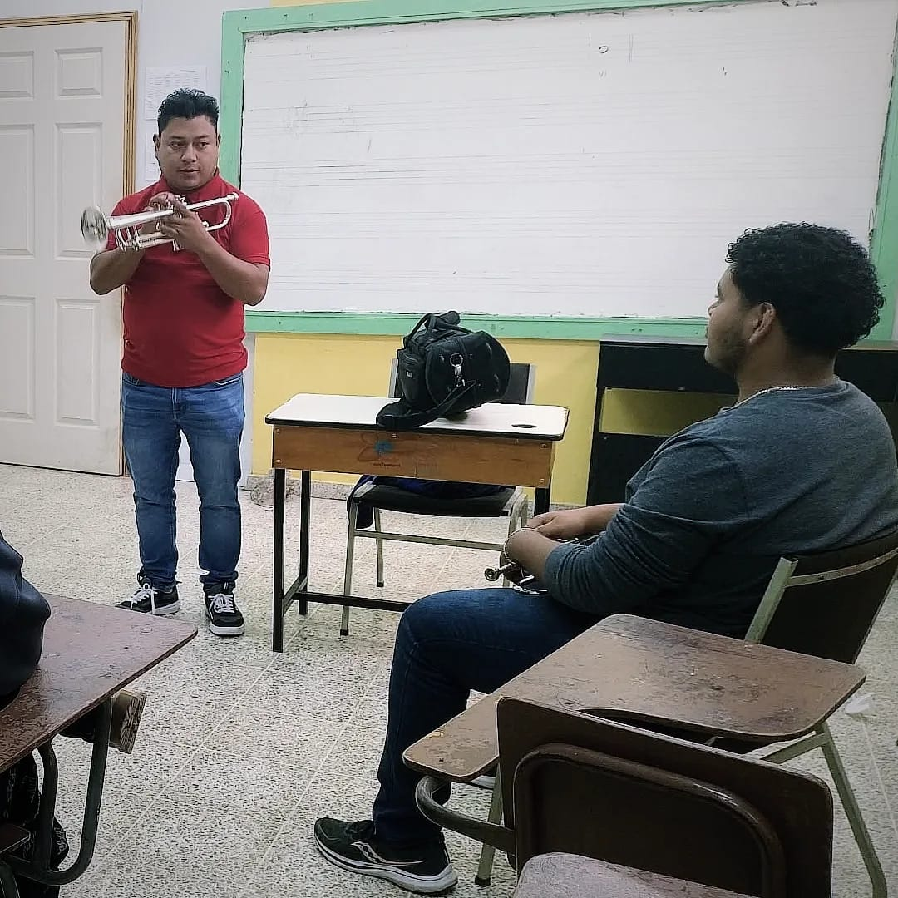

ESTUDIOS |
Pagina Principal |
Experiencia personal |
Proyectos destacados |
|
Estoy en mi ultimo año de estudio despues de 5 largos años per llenos de bonitas experiencias, conoci personas que se han vuelto muy especial para mi, adquiri muchos conocimientos, pero aparte de todo conoci y vivi lo que es ser parte de la familia Marista, El Instituto Marista La Inmaculada no solo tiene preparación academica sino tambien nos prepara moral y eticamente, para mejor esta socidad tan sucia. |
 |
En mis tiempos libres tambien dedico mi esfuerzo a lo que es la musica, un talento que desde pequeño sentia muy ferviente en lo mas profundo de mi corazón, poco a poco y con mucho esfuerzo voy logrando cada meta y cada sueño que ese pequeño Mario un dia tubo, mi primer deseo era aprender a ejecutar el instrumento de aliento que es la trompeta, un instrumento que cada vez que lo miraba mis ojos se llenaban de brillo ahora tengo la dicha de poderlo ejecutar y seguirlo aprendiendo |